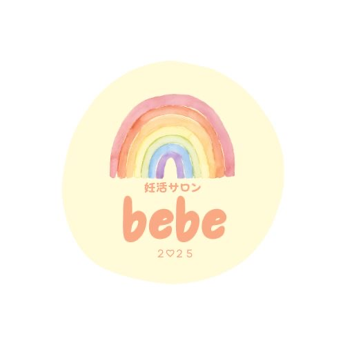
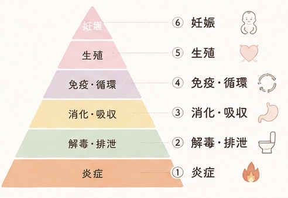

事前に知る
スタート前
- 妊活カウンセリング
- 体調・生活習慣の確認と説明
- 治療内容や月経周期を確認し、実施時期を相談

salon bebe北海道北見市プライベートサロンbebe 妊活ファスティングプログラム
妊娠するためだけじゃない
これからの自分の身体と生活に向き合う1ヶ月
体調や治療スケジュールに合わせて、個別にご相談します。
はじめに
食事も、サプリメントも、不妊治療も
必要な方にとって、大切な選択肢です
その選択を大切にしながら、
赤ちゃんを迎えるための身体の土台にも
目を向けてみませんか
ちゃんとお腹が空く？
食後に重たくならない？
気持ちよく排泄できる？
朝すっきり起きられる？
冷えや疲れはないかな？
月経の変化に気づけている？
自分の身体や生活を知り、
これからの習慣を一緒に考えたい方へ
ひとりで抱えず、個別に相談できる1ヶ月です
bebeが大切にしていること
妊娠・生殖だけを見るのではなく、身体全体を
日々の暮らしという土台から見ていく考え方です。
「今の私なら、どこに目を向けよう？」
終了時には、あなたの気づきを一緒に振り返ります。

プログラムの内容
ファスティングは、
身体と生活を観察する一つのきっかけ。
「3日間食べないこと」ではなく、
自分に合う次の一歩を見つけることを大切にします。
スタート前
11月1日〜30日
終了時
開始日は一律ではありません。
治療・服薬や注射・体調・月経周期・妊娠の可能性を確認し、実施の可否と時期を個別に相談します。
グループLINEや参加者同士の交流はありません。
ご相談はすべて個別に伺います。
第1期 募集案内
2026年10月1日 募集開始
ご連絡だけでは参加確定になりません。
内容についてのご相談も、LINEからどうぞ。
このプログラムは医療行為や不妊治療の代わりではなく、妊娠や体質改善を保証するものではありません。
妊娠中・妊娠の可能性がある方は、自己判断でファスティングを始めないでください。治療中・服薬中・持病がある方は、事前に主治医へご相談ください。薬や注射を自己判断で中断・変更しないでください。状態によっては実施を見合わせます。